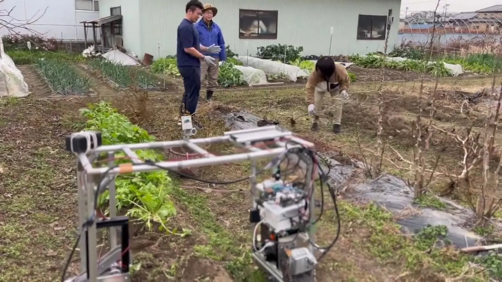
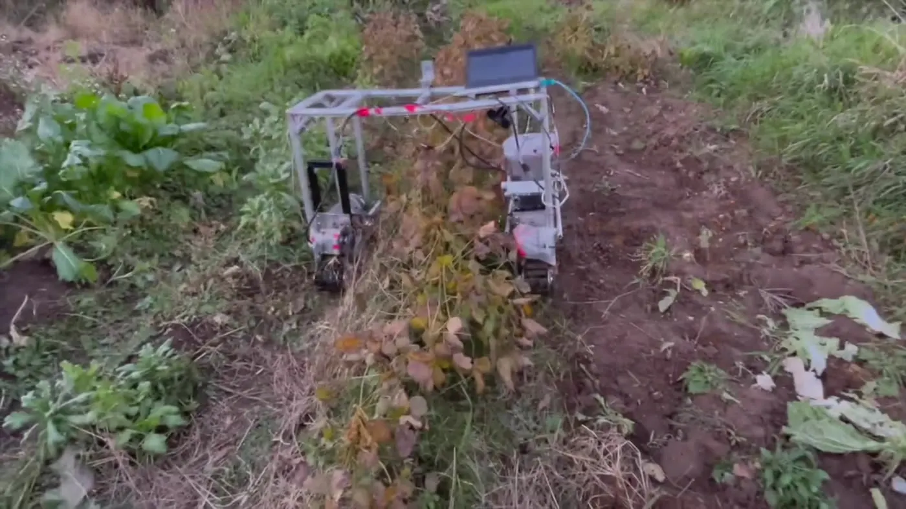

OHANA-
ROBOT
畝をまたいで走り、芝刈り用バリカンで雑草を低く保つ、対話型の選択的機械除草ロボットです。大規模農業の効率化ではなく、自給的な畑で人が機械と暮らす方法を試しています。
- Year
- 2023年–
- Context
- 2023年度 未踏IT人材発掘・育成事業
- Method
- バリカン式選択除草、畝またぎ走行
- Technology
- LLM、自然言語操作、画像認識、環境センシング
- Role
- 発案、機械・電装設計、ソフトウェア、制作、実地試験
- Status
- オープンソース志向の継続研究


01 — 出発点
大学では、大規模農家を対象とするスマート農業を研究していました。一方、農村滞在を重ねるなかで、自給的な小さな畑には、価格や圃場条件の面で既存の農業ロボットが入りにくいことを知りました。
そこで「作業を無人化する機械」ではなく、使う人が自分の畑と暮らしに合わせて変更できる農耕民具としてロボットを作り始めました。
02 — 仕組み
機体は畝をまたいで移動し、下部に取り付けた芝刈り用バリカンで草を切ります。根から完全に除去するのではなく、作物より低い状態へ保つことで雑草との共存を選びました。
自然言語インターフェースが人の曖昧な指示を機体の行動へ変換し、ビジョンセンサを使って移動と環境認識を行います。
03 — 判断
高価な専用機構より、交換しやすい市販バリカンを採用しました。除草性能だけを最大化せず、現場の人が修理し、別の作業へ作り替えられる余地を優先しています。
OHANAは「Open-source Handcrafted Artisanal Nature-centric Agriculture」の頭文字です。完成品を販売して終えるのではなく、利用者が土地ごとの改造を共有するコミュニティまでをプロジェクトに含めています。
04 — 公開後
開発した機体は畑で試験し、展示や子どもとの体験にも使用しました。長期運用時の耐久性、安全性、農家と開発者の知識共有は引き続き検証が必要です。現在も、自分自身を最初の利用者として、ロボットのある生活を実践する方法を研究しています。